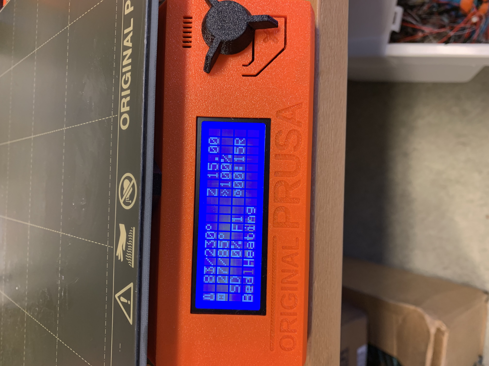
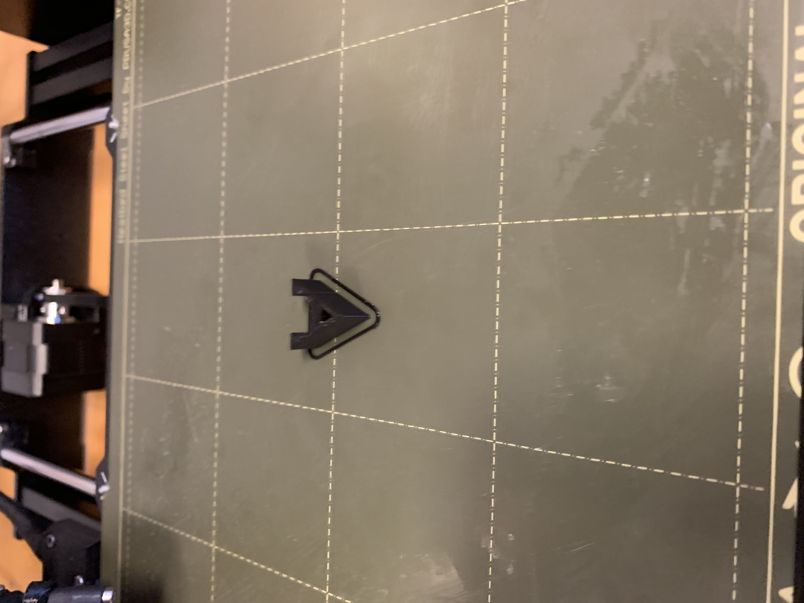
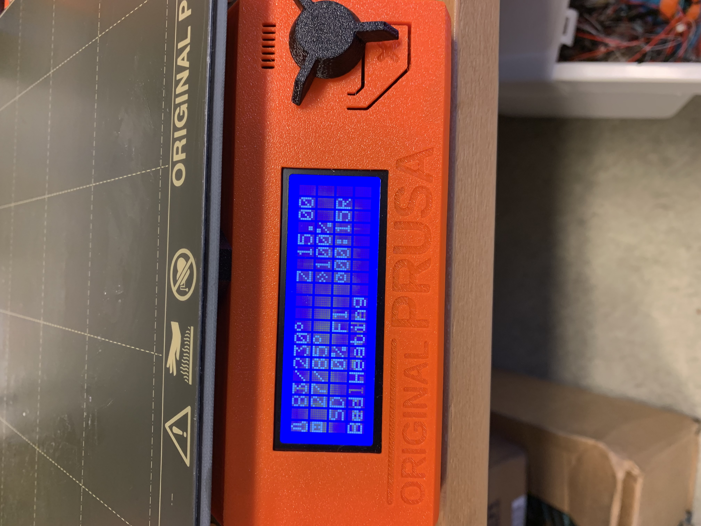
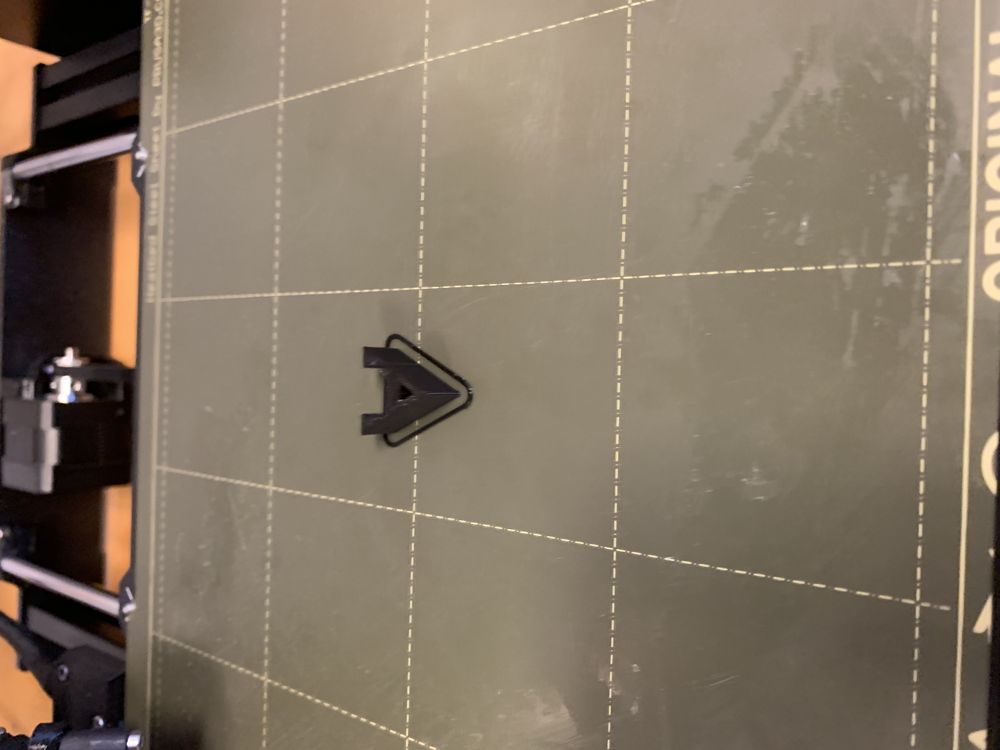

3D printing
The first part of this project was to design a 3D object and print it using a 3D-printer.
Before printing the object, a print test must be performed in order to determine the overhang and other aspects. The result from the test may be found here.
During this project I 3D-printed about a dozen objects for another project I had going on. Namely, a soup-feeding robot. However, since I didn't document the fabrication process, I decided to make a simple model for the purpose of showing how it's done.
Open a CAD software of your liking. I used Fusion 360. I decided to make the letter A.
After finishing the design, I exported to STL. I used this video to guide me.
.png)
Next step is to bring the STL file over to the computer where the 3D-printer is located and open the file in Prusa Slicer. I used this video to help me slice. For all of the objects that I made I never had to do much other than let the software decide all the settings for me. Whenever I needed extra support I let Prusa Slicer make one for me. In all cases it came out just fine.
I then exported the G-code and took it over to the printer. I turned it on and waited for it to heat up. When it was ready I started printing. This print took about half and hour.
 



3D-printed robot
All of the parts of me and my schoolmates robot were 3D-printed. Here are some images.

3D-scanning
For the 3D-scanning portion of this project, I used an app called Polycam. It allows you to capture objects in 3D using your smartphone.
Here is the result
Here is a scan of my surroundings.
Workload
| 3D-print test | 1 hour |
| Drawing in Fusion | 1 hour |
| Processing in Prusa | 0.5 hour |
| 3D-printing in FabLab | 1 hour |
| Documenting on website | 3 hours |
| 3D-scanning | 1 hour |
| Total | 7.5 hours |